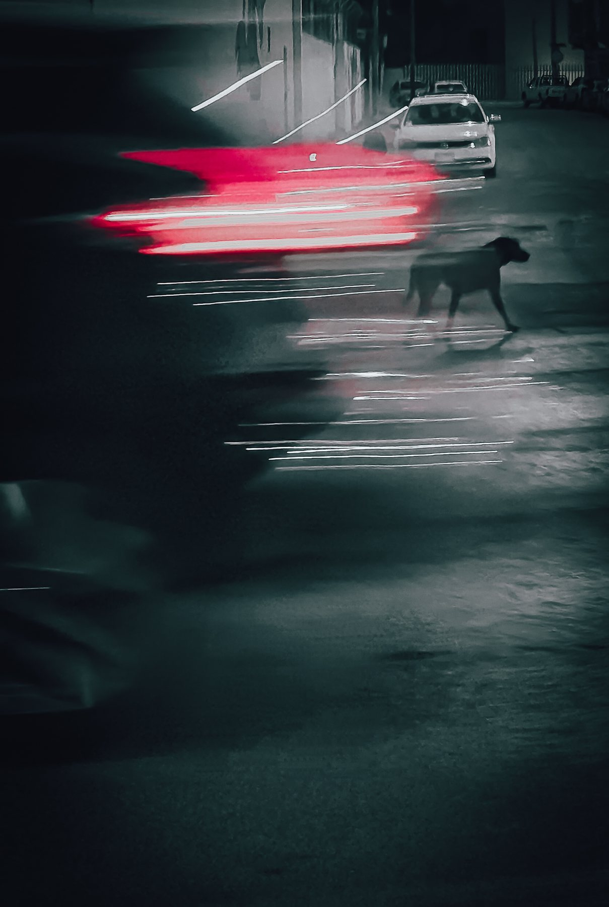
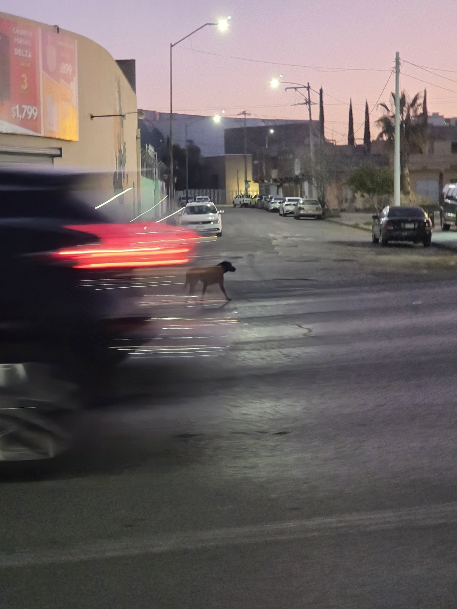
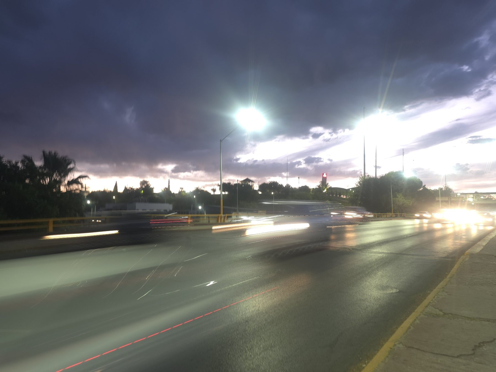

Fotografía · 2026
Dualidad
Fotografía callejera con velocidad de obturación lenta
- Contexto
- Fotografía Digital, UVM
- Fecha
- abril de 2026
- Mi rol
- Fotografía y postproducción
- Herramientas
- Teleobjetivo 3× del celular, Adobe Lightroom

El reto
Retratar la velocidad de la ciudad de Chihuahua y, en medio de ese ajetreo, a un perro que cruza la calle con calma y seguridad.
Proceso
Hice tomas de prueba con el gran angular y con el teleobjetivo. Con la apertura fija (f/2.4), el reto fue aprovechar el atardecer sin quemar la imagen a 1/30 s, equilibrando el ISO y disparando rápido sin perder al perro. Esa velocidad de obturación dejó la estela de las luces traseras.
En Lightroom hice una edición agresiva: más contraste, menos saturación general y solo los rojos y naranjas potenciados, con una viñeta ligera.
Resultado
La estela roja y el perro nítido cuentan la idea sin necesidad de texto.

